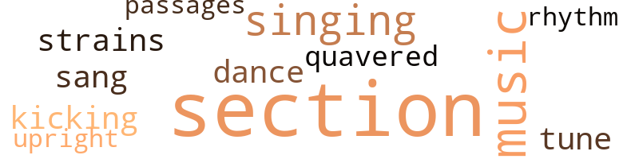
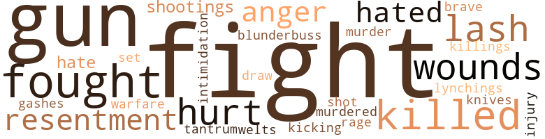
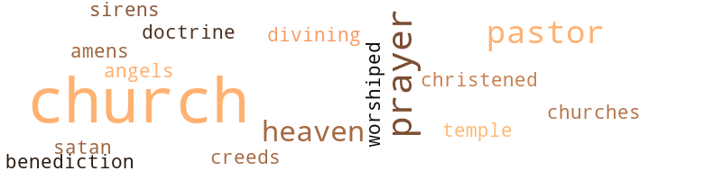

Big Lie (The), by LaHon, Vyola Therese (1964)
23 music-related terms matched in this text.
Most frequent terms in this topic: section (9); music (3); singing (2); dance (1); tune (1)
dance.n.01
Definition: an artistic form of nonverbal communication
| word | sentence |
|---|---|
| dance | Peter and David seemed in no great hurry to make up their minds as to what they wanted to do in life , and their boyish capers , on what Clara called " the trashy end of ' The Hill / " kept both Peter and Clara concerned in their hearts ; The flashy but not-too-nice girls , and even the unattached older women , whom Clara said " should have known better , " were continually after the boys to go to this party , or that dance . |
kick.v.04
Definition: kick a leg up
| word | sentence |
|---|---|
| kicking | It was later found that the youngest , wanted a " horsie ride , " and when the poor dim-witted fellow could n't understand , this innocent threw herself down , kicking and screaming . |
music.n.01
Definition: an artistic form of auditory communication incorporating instrumental or vocal tones in a structured and continuous manner
| word | sentence |
|---|---|
| music | The " inseparables " she could hear in their room , their rich laughter sounding like music in her ears . |
| music | Then came 1954 , and now the drums were beating out the martial music of freedom ! |
| music | The music fanned the flame in his soul , and he knew it was time to go home ! |
passage.n.06
Definition: a short section of a musical composition
| word | sentence |
|---|---|
| passages | Then , remembering the things told to him by his father and his grandfather , old Hiram , those things about the guns , the rope , and the chains , he faced his son , and said " You hear my words , boyl Most of us lived through the ' middle passages . ' |
rhythm.n.04
Definition: the arrangement of spoken words alternating stressed and unstressed elements
| word | sentence |
|---|---|
| rhythm | Juda , lulled by the rhythm and speed of modern locomotion , gave himself up to introspection . |
section.n.01
Definition: a self-contained part of a larger composition (written or musical)
| word | sentence |
|---|---|
| section | Its downtown section was laid out in squares where its many small business houses operated . |
| section | U. S. Highway 1 ran through Pineyville , entering through the subdued bustle of the downtown section , running around its squares , and then leaving by its rural areas . |
| section | It was only in the years after Juda 's birth , that the younger generation seemed to disclaim any terror associated with this section . |
| section | There was a louder blaring of phonographs than was heard even in the gay and uninhibited lower section of " The Hill , " the part that lay not far from the sign that informed all and sundry that they were " leaving Pineyville . " |
| section | The sounds in this section of " colored Pineyville , " though rich , earthy and varied , were muted . |
| section | But the " inseparables " knew that the girls in their section had to be handled with care . |
| section | Many of the " better " residents of " The Hill " knew that among those living in the section to which he was headed there were those who would rather fight than eat . |
| section | This could not by any means be called a hill , but those who resided in this section of the city , always referred to it as " The Hill . " |
| section | The smells coming from this section of the house promised a good , old-fashioned dinner , with all of the things that Juda liked . |
sing.v.02
Definition: produce tones with the voice
| word | sentence |
|---|---|
| sang | Upon arriving at the church , he had marched dutifully up to the minister , pulling Clara along , and sang out in his high baby treble , " G ' mornin ' Reb . |
singing.n.01
Definition: the act of singing vocal music
| word | sentence |
|---|---|
| singing | Breezes were swaying the trees , the sun was shining and the birds were singing . |
| singing | Their hearts were singing . |
tune.n.01
Definition: a succession of notes forming a distinctive sequence
| word | sentence |
|---|---|
| strains | At the church , the organ began its slow , melodious strains and the proper people , found their places , though in all the attendant confusion Clara never quite knew just how they did it . |
| tune | To the tune of wailing sirens and the cold , horrifying , but ominous silence after the shots , frightened parents gathered their wide-eyed children around them . |
upright.n.02
Definition: a piano with a vertical sounding board
| word | sentence |
|---|---|
| upright | For the sake of the " inseparables , " his unborn sons must walk upright in the land , their heads held high ! |
warble.v.01
Definition: sing or play with trills, alternating with the half note above or below
| word | sentence |
|---|---|
| quavered | His voice had quavered and broken on the last word . |
61 violence-related terms matched in this text.
Most frequent terms in this topic: fight (9); fought (5); guns (4); killed (4); hurt (3)
anger.n.01
Definition: a strong emotion; a feeling that is oriented toward some real or supposed grievance
| word | sentence |
|---|---|
| anger | He could feel again John 's arms supporting him , he could see the look of dreadful hurt and anger in his eyes , as he spoke , asking him , pleading with him , " Dad , shall we live ? |
| anger | One near to them had fallen with so many of the " EAGLE 's " brood , but the " EAGLE " lifted his wings , gave out a rasping cry of hurt and anger for those fallen and flew on . |
blunderbuss.n.01
Definition: a short musket of wide bore with a flared muzzle
| word | sentence |
|---|---|
| blunderbuss | Clara and Peter , alerted by the screams of their youngest daughter , came rushing out of the house , Peter , carrying his old blunderbuss , and Clara , with the strap she used on the boys ( though she could never explain just why she had taken the strap ) . |
bullying.n.01
Definition: the act of intimidating a weaker person to make them do something
| word | sentence |
|---|---|
| intimidation | They were not holding to the peace-anyhow , peace-at-any-price attitude that their fathers and grandfathers had held through terror and intimidation . |
cut.n.05
Definition: a wound made by cutting
| word | sentence |
|---|---|
| gashes | Branching off from the highrvay , one saw red gashes leading inland through the greenery . |
draw.v.23
Definition: pull (a person) apart with four horses tied to his extremities, so as to execute him
| word | sentence |
|---|---|
| draw | Thanks to his parents , he had been prepared to draw strength from within . |
fight.n.05
Definition: a boxing or wrestling match
| word | sentence |
|---|---|
| fights | For the boys the stolen swim in the creek had as much zest as the frequent rock fights and the sometimes bloody noses . |
| fight | He was followed , and challenged , and the fight that erupted was a natural result . |
| fight | Juda , almost nineteen when infamy struck at Pearl Harbor , had to wait almost two years , to get into the fight . |
| fight | Since he had found out that he would not be called into the fight , he had turned back to the land . |
| fight | He knew now that for his whole country the spiritual and moral fight was gaining momentum , and the end , regardless of those who would deny it , was true democracy for all of its people . |
| fight | He also knew that he had to be a part of this fight . |
| fight | Here , die fight was out in the open . |
fight.v.02
Definition: fight against or resist strongly
| word | sentence |
|---|---|
| fight | Stay strong , and fight the Lie . " |
| fight | Many of the " better " residents of " The Hill " knew that among those living in the section to which he was headed there were those who would rather fight than eat . |
| fought | Leaving school and doing defense work had been one of the ways in which he had fought for inner peace . |
| fought | Clara knew , too , that the battle that she had fought had been fought and won by many before her , and would be fought again and again ! |
| fought | Clara knew , too , that the battle that she had fought had been fought and won by many before her , and would be fought again and again ! |
| fought | Clara knew , too , that the battle that she had fought had been fought and won by many before her , and would be fought again and again ! |
| fought | He was prepared now to go into Southern courts and be called " boy " and " Nigra " and to have those who were sworn to uphold justice try to make mockery of it - of justice and of this great America that he had fought for . |
| fight | Knowing that the principal was the leading exponent of that spirit on " The Hill " that propounded the " go slow " and the " not now " policy , and had done , and was doing , untold damage to the race , Juda thought : " He is too old to fight morally , and spiritually , and much too old to change ! " |
fit.n.01
Definition: a display of bad temper
| word | sentence |
|---|---|
| tantrum | It was told by the " Old Ones " that in the sober light of the following day , when the request for a " horsie ride " was repeated by the child and was not immediately forth-coming , the same screaming tantrum was repeated . |
fury.n.01
Definition: a feeling of intense anger
| word | sentence |
|---|---|
| rage | What did the girl know of her fears , her pleadings , her prayers and tears to hold her men folks in their rage and sorrow to stand silent like clods , while theirs lay dead ? |
gun.n.01
Definition: a weapon that discharges a missile at high velocity (especially from a metal tube or barrel)
| word | sentence |
|---|---|
| gun | In the coming days , the rope , the torch , and the gun will be added to the chains . |
| guns | Then , remembering the things told to him by his father and his grandfather , old Hiram , those things about the guns , the rope , and the chains , he faced his son , and said " You hear my words , boyl Most of us lived through the ' middle passages . ' |
| guns | Was there no end to this agony of the lash , the chains , the rope , and now the guns ? |
| guns | What about old Hiram 's command that , despite the chains , the lash , the rope and the guns , we must march on ? " |
| guns | Juda , could hear his voice as it had faded in the distance , saying , " Remember the chains , the lash , the guns , and the rope !!! " |
hate.n.01
Definition: the emotion of intense dislike; a feeling of dislike so strong that it demands action
| word | sentence |
|---|---|
| hate | Then , too , he had come into contact with racial hate , although different in form from its Southern counter-part . |
| hate | The mental reasoning that has taught him to teach the doctrine of hate is to be pitied , and would be easily understood by the psychiatrist . |
hate.v.01
Definition: dislike intensely; feel antipathy or aversion towards
| word | sentence |
|---|---|
| hated | She hated for Juda to be out of her sight , for she knew that Peter would not let him grow up on " The Hill . " |
| hated | Though he hated to leave his mother and father so soon after his return to " The Hill , " he knew that in a few days he would be on his way to WAR ! |
injury.n.01
Definition: any physical damage to the body caused by violence or accident or fracture etc.
| word | sentence |
|---|---|
| hurt | And " The Bottom " roared out its hurt , in louder " hillbilly laments . " |
| hurt | He could feel again John 's arms supporting him , he could see the look of dreadful hurt and anger in his eyes , as he spoke , asking him , pleading with him , " Dad , shall we live ? |
| hurt | One near to them had fallen with so many of the " EAGLE 's " brood , but the " EAGLE " lifted his wings , gave out a rasping cry of hurt and anger for those fallen and flew on . |
| injury | Fully recovered from his injury , he knew that his studies must be resumed as quickly as possible . |
kick.v.04
Definition: kick a leg up
| word | sentence |
|---|---|
| kicking | It was later found that the youngest , wanted a " horsie ride , " and when the poor dim-witted fellow could n't understand , this innocent threw herself down , kicking and screaming . |
kill.v.10
Definition: cause the death of, without intention
| word | sentence |
|---|---|
| killed | The latter did affect the Jon-sons , since Clara collected a small sum , as the next of kin , to the brother killed in World War I . |
| killed | She thought to herself , that they were too much like their uncle ( her brother who had been killed in the war ) , for they were good-looking and full of deviltry . |
| killed | And they , in turn , in their letters to him did not mention the fact that his sister Sarah 's husband had been killed . |
| killed | Both parents were " now in Glory , " as she said , and her only brother had been killed in World War I. ( " Peter married me for my good looks , and not for my money , for that was as scarce as hen 's teeth , " was the way she put it . ) |
killing.n.01
Definition: an event that causes someone to die
| word | sentence |
|---|---|
| killings | There were changes in the whole town in the weeks following the killings . |
knife.n.02
Definition: a weapon with a handle and blade with a sharp point
| word | sentence |
|---|---|
| knives | One did not shudder on viewing it , for it did not have the obscene look of the razor cuts , nor the ugly welts of the wounds made by those long knives so often used by the Saturday-night fighters throughout the South . |
lynching.n.01
Definition: putting a person to death by mob action without due process of law
| word | sentence |
|---|---|
| lynchings | There were lynchings in the early years of Pineyville , but as the town grew these had disappeared over the years to be replaced by some mysterious disappearances and more blatant jailings that a certain element of the lower end of " The Hill " were plagued with from time to time . |
murder.n.01
Definition: unlawful premeditated killing of a human being by a human being
| word | sentence |
|---|---|
| murder | Not John , or even me , for Sarah thinks I should have done more about seeing that the murder of the boys was avengedl " But , oh , Lord ! |
murder.v.01
Definition: kill intentionally and with premeditation
| word | sentence |
|---|---|
| murdered | There was a secret pain for his murdered brothers that would not let him be . |
resentment.n.01
Definition: a feeling of deep and bitter anger and ill-will
| word | sentence |
|---|---|
| resentment | For Howie Bratiner , too , the road was ended , and for Slim Sumterl The brother , who had held such a burning resentment for his sister 's downfall , had paid for his resentment with his life . |
| resentment | For Howie Bratiner , too , the road was ended , and for Slim Sumterl The brother , who had held such a burning resentment for his sister 's downfall , had paid for his resentment with his life . |
shoot.v.02
Definition: kill by firing a missile
| word | sentence |
|---|---|
| shot | From later evidence , it was determined that Peter had been shot first . |
shooting.n.02
Definition: killing someone by gunfire
| word | sentence |
|---|---|
| shootings | And though some of those scooped up in the net of the Law after the shootings , proclaimed their innocence , " justice " had decided that those " Nigras " had to be taught a lesson , that they must n't lay hands on a Southern gentleman , no matter what he had done . |
| shootings | So , all " rounded up " on the " Lower End " after the shootings had been given fast trials and sent on to the chain gang , despite lawyer Brownwell 's plea for time to place blame rightly . |
sic.v.01
Definition: urge to attack someone
| word | sentence |
|---|---|
| set | Sarah , her heart set on being a teacher , had left home right after her brother 's wedding , and was the third one of the Jonsons to leave " The Hill . " |
wale.n.01
Definition: a raised mark on the skin (as produced by the blow of a whip); characteristic of many allergic reactions
| word | sentence |
|---|---|
| welts | One did not shudder on viewing it , for it did not have the obscene look of the razor cuts , nor the ugly welts of the wounds made by those long knives so often used by the Saturday-night fighters throughout the South . |
war.n.03
Definition: an active struggle between competing entities
| word | sentence |
|---|---|
| warfare | He had been trained to survive in modern warfare as near as survival was possible , and he had been drilled until he had remembered all the things he had been taught There had been many incidents tied in with this training , many of them reminiscent of the Deep South . |
weather.v.01
Definition: face and withstand with courage
| word | sentence |
|---|---|
| brave | At once , to the rescue came the brave denizens of " The Bottom , " and without the hesitation of brains decided that their little darling had been attackedl The following day , the body of poor silly Sam was found in the deep woods , where neighborhood boys often played Indians . |
whip.v.04
Definition: strike as if by whipping
| word | sentence |
|---|---|
| lash | Was there no end to this agony of the lash , the chains , the rope , and now the guns ? |
| lash | What about old Hiram 's command that , despite the chains , the lash , the rope and the guns , we must march on ? " |
| lash | Juda , could hear his voice as it had faded in the distance , saying , " Remember the chains , the lash , the guns , and the rope !!! " |
wound.n.01
Definition: an injury to living tissue (especially an injury involving a cut or break in the skin)
| word | sentence |
|---|---|
| wounds | Would the paths lead past the wounds of fear and ill-will into the sunshine of understanding ? |
| wounds | The MURDER of Peter 's two boys , was " regrettable sho ' ly , " but the law , after searching diligently , could n't find a single soul that had gone with Howie Jr. from " The Bottom " to " The Lower End " on that fatal nightl Who had caused the wounds in the forehead and chest of the boys ' bodies ? |
| wounds | One did not shudder on viewing it , for it did not have the obscene look of the razor cuts , nor the ugly welts of the wounds made by those long knives so often used by the Saturday-night fighters throughout the South . |
53 religion-related terms matched in this text.
Most frequent terms in this topic: church (23); Church (6); prayers (4); pastor (4); Heaven (3)
amen.n.01
Definition: a primeval Egyptian personification of air and breath; worshipped especially at Thebes
| word | sentence |
|---|---|
| amens | The " Old Ones , " full of their Christian fervor , were shouting their " yes , Lord 's " and their amens . " |
baptize.v.01
Definition: administer baptism to
| word | sentence |
|---|---|
| christened | The minister had christened the boys , and his grief was almost unendurable . |
blessing.n.05
Definition: the act of praying for divine protection
| word | sentence |
|---|---|
| benediction | There was no benediction said this day , for no one would have heard it . |
church.n.02
Definition: a place for public (especially Christian) worship
| word | sentence |
|---|---|
| church | For example , at the age of three , attired in his Sunday best and proudly holding her hand , he walked to church with her , having been coached over and over before leaving home to say " good morning " to the pastor . |
| church | Upon arriving at the church , he had marched dutifully up to the minister , pulling Clara along , and sang out in his high baby treble , " G ' mornin ' Reb . |
| church | Finally , each member of the male contingent , inspected by Clara , was ready to leave for the church . |
| church | After the ceremony at the church , all would come to Clara 's home for the first reception , then to the bride 's mother , Josiebelle Turner , for the final La De Da before going away . |
| church | She was n't forgetting for a moment Josiebelle 's fine airs in church on Sunday mornings , when she played the organ for the choir . |
| church | Scooting him before her , she joined his father , who was still waiting , and silently set out for the church . |
| church | " Hill-ites " were converging on the church , from all sides . |
| church | At the church , the organ began its slow , melodious strains and the proper people , found their places , though in all the attendant confusion Clara never quite knew just how they did it . |
| church | Peter Sr. and Miriam were due at the church . |
| church | As one traveled through this sylvan scene , it was not long before a bright , newly painted church came into view . |
| church | The parsonage sat , like a big old fat frog , on a wide grassy plot , and was right next door to the church . |
| church | The old Doc , had been to see her also , and now only Reverend Stonely , and some of her church sisters remained . |
| church | Now they were passing the church and entering the well-known home area . |
| church | And then , with a roar , the people surged around himl It was only due to the solemnity of the day that he was not lifted bodily and carried from the church . |
| church | They came out of the church , stepping more buoyantly ! |
| church | The old women were gathered in colorful , chattering groups on the church grounds , and sounding like so many magpies . |
| church | Three times now he had thought that he had captured his wife , when old Aunt Minnie ( she was the " mother " of the church , and said to be going on ninety ) had skillfully defeated his efforts . |
| church | So she had left the group of church sisters reluctantly , and like a mother hen had gotten her family together ( which Peter had been unable to do ) . |
| church | As Peter and Clara left the church , there were tears of gladness in their old eyes . |
church.n.04
Definition: the body of people who attend or belong to a particular local church
| word | sentence |
|---|---|
| church | Dutiful and industrious , regular in attendance at church , he gave his parents no worry . |
| Church | In Peter 's words , " Those two wants to go to Heaven whole soul and body , right now since they heard the new pastor at the Baptist Church , tell about the fine eating there . " |
| churches | We must n't gather in crowds , only in our churches , or they are quick to beat and scatter us . |
| Church | With their plentiful bosoms held in petrified subjection , their full-hipped derribres under equally cemented control ( revolving nevertheless ) , they were descending in a group , their ranks unbroken , their course set for the Baptist Church . |
| Church | This was the colored Baptist Church , and it marked the entrance into Negro Pineyville . |
| Church | It was here that the Rev. Jehosephat P. Stonely , resided , and " tended his flock " - that is , all of those who were not members of the equally important Methodist Church a quarter of a mile away . |
| church | The latter church had a bell that could be heard loud and clear on Sunday mornings . |
| church | Because of this , the members were very proud of their pastor , the Rev. Robert Andrew Malachia , and of their church also . |
| church | Reverend Stonely could not remember a sadder and more sorrowful occasion in his twenty years as pastor of the Baptist church . |
| Church | A Christian man , he was deacon in the Baptist Church and well thought of in the community . |
| Church | And to these and to his family and to the evils of the land , as well , Juda had come homel On the first Sunday , which was a big day at the Baptist Church on " The Hill , " Juda was asked to speak by the Reverend Stonely , and the congregation long remembered his words . |
creed.n.01
Definition: any system of principles or beliefs
| word | sentence |
|---|---|
| creeds | They came , and they were of all colors and of all creeds ! |
curate.n.01
Definition: a person authorized to conduct religious worship
| word | sentence |
|---|---|
| pastor | In Peter 's words , " Those two wants to go to Heaven whole soul and body , right now since they heard the new pastor at the Baptist Church , tell about the fine eating there . " |
| pastor | For example , at the age of three , attired in his Sunday best and proudly holding her hand , he walked to church with her , having been coached over and over before leaving home to say " good morning " to the pastor . |
| pastor | Because of this , the members were very proud of their pastor , the Rev. Robert Andrew Malachia , and of their church also . |
| pastor | Reverend Stonely could not remember a sadder and more sorrowful occasion in his twenty years as pastor of the Baptist church . |
divine.v.01
Definition: perceive intuitively or through some inexplicable perceptive powers
| word | sentence |
|---|---|
| divining | Their mother remained neutral , going directly to the culprit as if using a divining rod , and delivering the necessary spanking . |
doctrine.n.01
Definition: a belief (or system of beliefs) accepted as authoritative by some group or school
| word | sentence |
|---|---|
| doctrine | The mental reasoning that has taught him to teach the doctrine of hate is to be pitied , and would be easily understood by the psychiatrist . |
eden.n.01
Definition: any place of complete bliss and delight and peace
| word | sentence |
|---|---|
| Heaven | In Peter 's words , " Those two wants to go to Heaven whole soul and body , right now since they heard the new pastor at the Baptist Church , tell about the fine eating there . " |
| Heaven | As if in answer to Reverend Stonely 's exhortations , she was about to fly straight up and join the other angels in Heaven . |
| Heaven | And a block over from the highway , on Mary Street , was Pineyville 's colored mortician ( no one said undertaker , any more ) where all " Hill " residents stopped off , on their way to Heaven . |
prayer.n.01
Definition: the act of communicating with a deity (especially as a petition or in adoration or contrition or thanksgiving)
| word | sentence |
|---|---|
| prayers | Juda remembered the time the bully from " The Bottom " had caught him coming home alone from school and tried to make him kneel and say his prayers before being allowed to proceed on his way . |
| prayer | No one visited at night , and only hardy souls went to prayer meetings as usual . |
| prayers | What did the girl know of her fears , her pleadings , her prayers and tears to hold her men folks in their rage and sorrow to stand silent like clods , while theirs lay dead ? |
| prayers | And in Miriam 's room in the big city , Clara 's prayers were about to be answered . |
| prayers | Nonetheless , their spiritual yearnings and prayers over hundreds of years had now bred a race of young who were without fearl They knew Juda ! |
saint.n.02
Definition: person of exceptional holiness
| word | sentence |
|---|---|
| angels | As if in answer to Reverend Stonely 's exhortations , she was about to fly straight up and join the other angels in Heaven . |
satan.n.01
Definition: (Judeo-Christian and Islamic religions) chief spirit of evil and adversary of God; tempter of mankind; master of Hell
| word | sentence |
|---|---|
| Satan | Silent as the grave , she thought of what Peter had said at the time , " Clara , theirs is the work of Satan and the grave . " |
siren.n.01
Definition: a sea nymph (part woman and part bird) supposed to lure sailors to destruction on the rocks where the nymphs lived
| word | sentence |
|---|---|
| sirens | To the tune of wailing sirens and the cold , horrifying , but ominous silence after the shots , frightened parents gathered their wide-eyed children around them . |
temple.n.03
Definition: an edifice devoted to special or exalted purposes
| word | sentence |
|---|---|
| temple | They loved this tall brown young man with the faint scar across the temple . |
worship.v.02
Definition: show devotion to (a deity)
| word | sentence |
|---|---|
| worshiped | To Juda , they were tall brown persons , to be worshiped , and to be quoted at school . |